Dense Trajectory Feature Evaluation
Contents
Dense Trajectory features were evaluated with CVPR 11 paper
Differences with the paper:
- PCA dimensionality reduction is not done before GMM
- Root normalization trick is not used
close all; clear all; clc; run('/nfs/bigeye/sdaptardar/installs/vlfeat/toolbox/vl_setup.m'); dset_dir = '/nfs/bigeye/sdaptardar/Datasets/Hollywood2/Hollywood2'; %base_dir = '/nfs/bigeye/sdaptardar/Datasets/Hollywood2/HollyWood2_BOF_Results'; base_dir = '/nfs/bigeye/sdaptardar/Datasets/Hollywood2/Improved_Traj'; num_train_dir = 823; num_test_dir = 884; classes = { 'AnswerPhone', 'DriveCar', 'Eat', 'FightPerson', 'GetOutCar', 'HandShake', 'HugPerson', 'Kiss', 'Run', 'SitDown', 'SitUp', 'StandUp' }; num_classes = 12; cvpr11_ap = [ 0.326, 0.88, 0.652, 0.814, 0.527, 0.296, 0.542, 0.658, 0.821, 0.625, 0.2, 0.652 ]'; feature_dir = [ base_dir '/' 'fisher' ]; results_dir = [ base_dir '/' 'results' ]; train_file = [ feature_dir '/' 'train_fv.mat' ]; test_file = [ feature_dir '/' 'test_fv.mat' ]; results_file = [ results_dir '/' 'classification.mat']; results = load(results_file); CM = cell(num_classes,1); order = cell(num_classes,1); testing_labels_fname = cell(num_classes,1); testing_labels_vector = cell(num_classes, 1); AP = zeros(num_classes, 1);
Confusion Matrices and Precision Recall Curves for all classes
fig = cell(num_classes, 1);
for i = 1:num_classes,
cl = classes{i};
disp(sprintf('%s', cl));
labels_dict_file_test = sprintf('%s%s%s%s%s%s%s%s', dset_dir, '/', 'ClipSets', '/', cl, '_', 'test', '.txt');
fprintf('%s\n', labels_dict_file_test);
[testing_labels_fname{i}, testing_labels_vector{i}] = textread(labels_dict_file_test, '%s %d');
te_sz = size(testing_labels_fname{i});
num_te = te_sz(1);
[CM{i}, order{i} ] = confusionmat(testing_labels_vector{i}, results.predicted_label{i});
disp(sprintf('Confusion Matrix for %s\n', cl));
disp(CM{i});
disp(sprintf('\n'));
AP(i) = results.ap_info{i}.ap;
fig{i} = figure;
%vl_pr(testing_labels_vector{i}, results.probability_estimates{i});
vl_pr(testing_labels_vector{i}, results.decision_values{i});
AnswerPhone
/nfs/bigeye/sdaptardar/Datasets/Hollywood2/Hollywood2/ClipSets/AnswerPhone_test.txt
Confusion Matrix for AnswerPhone
820 0
64 0
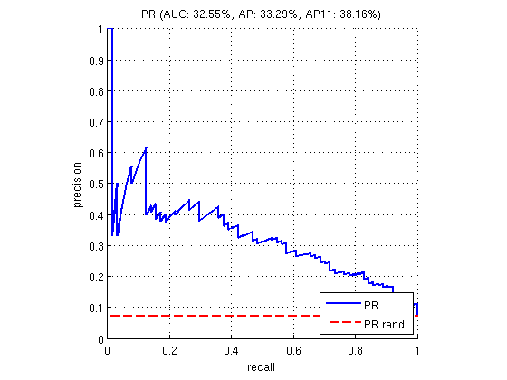 DriveCar
/nfs/bigeye/sdaptardar/Datasets/Hollywood2/Hollywood2/ClipSets/DriveCar_test.txt
Confusion Matrix for DriveCar
777 5
24 78
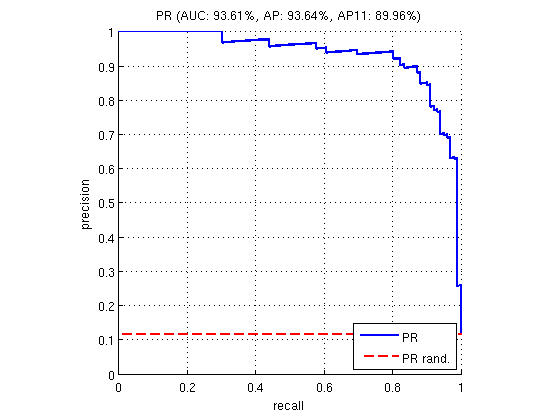 Eat
/nfs/bigeye/sdaptardar/Datasets/Hollywood2/Hollywood2/ClipSets/Eat_test.txt
Confusion Matrix for Eat
851 0
33 0
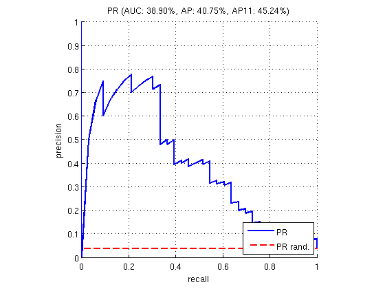 FightPerson
/nfs/bigeye/sdaptardar/Datasets/Hollywood2/Hollywood2/ClipSets/FightPerson_test.txt
Confusion Matrix for FightPerson
810 4
30 40
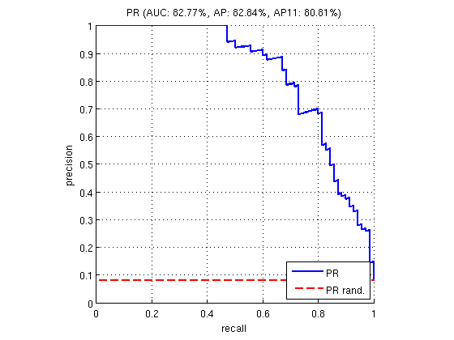 GetOutCar
/nfs/bigeye/sdaptardar/Datasets/Hollywood2/Hollywood2/ClipSets/GetOutCar_test.txt
Confusion Matrix for GetOutCar
827 0
55 2
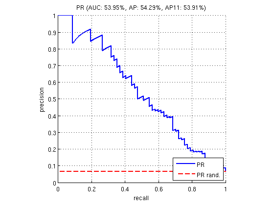 HandShake
/nfs/bigeye/sdaptardar/Datasets/Hollywood2/Hollywood2/ClipSets/HandShake_test.txt
Confusion Matrix for HandShake
839 0
45 0
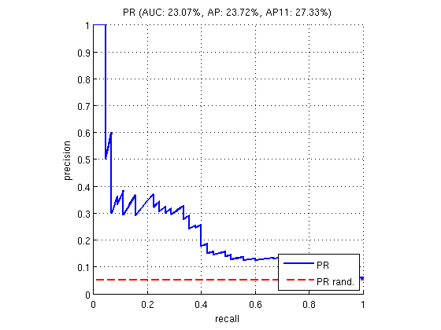 HugPerson
/nfs/bigeye/sdaptardar/Datasets/Hollywood2/Hollywood2/ClipSets/HugPerson_test.txt
Confusion Matrix for HugPerson
816 2
65 1
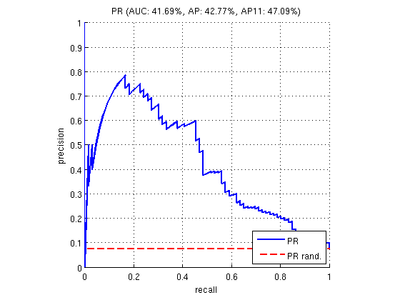 Kiss
/nfs/bigeye/sdaptardar/Datasets/Hollywood2/Hollywood2/ClipSets/Kiss_test.txt
Confusion Matrix for Kiss
771 10
63 40
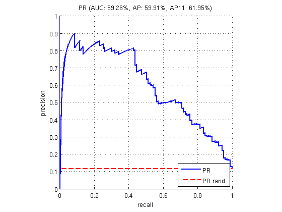 Run
/nfs/bigeye/sdaptardar/Datasets/Hollywood2/Hollywood2/ClipSets/Run_test.txt
Confusion Matrix for Run
728 15
47 94
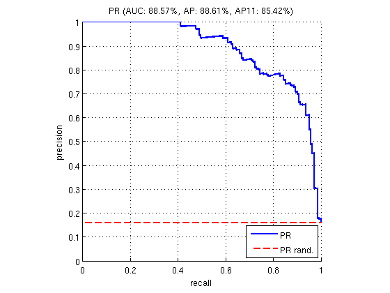 SitDown
/nfs/bigeye/sdaptardar/Datasets/Hollywood2/Hollywood2/ClipSets/SitDown_test.txt
Confusion Matrix for SitDown
774 2
69 39
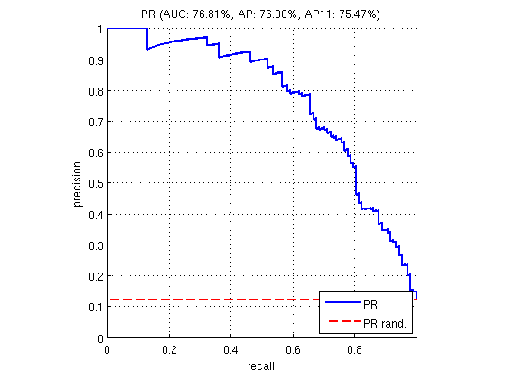 SitUp
/nfs/bigeye/sdaptardar/Datasets/Hollywood2/Hollywood2/ClipSets/SitUp_test.txt
Confusion Matrix for SitUp
847 0
37 0
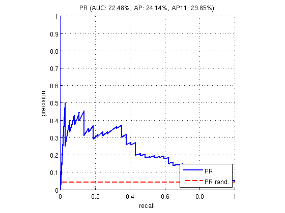 StandUp
/nfs/bigeye/sdaptardar/Datasets/Hollywood2/Hollywood2/ClipSets/StandUp_test.txt
Confusion Matrix for StandUp
725 13
82 64
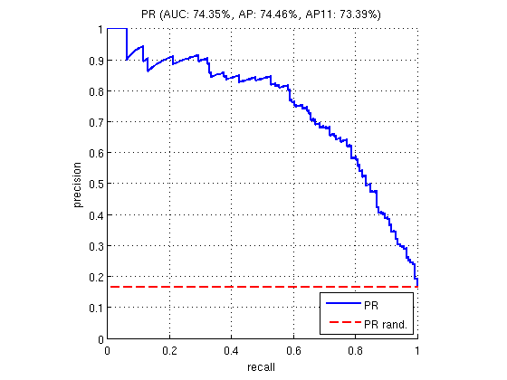 end
Class wise result summary
S = cell(num_classes, 1); for i = 1:num_classes S{i} = sprintf('%12s | %10f | %10f',classes{i}, AP(i), cvpr11_ap(i)); end S = [ sprintf('%12s | %10s | %10s', 'Classes', 'AP', 'CVPR11') ; S ]
S =
' Classes | AP | CVPR11'
' AnswerPhone | 0.332917 | 0.326000'
' DriveCar | 0.936436 | 0.880000'
' Eat | 0.407492 | 0.652000'
' FightPerson | 0.828449 | 0.814000'
' GetOutCar | 0.542892 | 0.527000'
' HandShake | 0.237221 | 0.296000'
' HugPerson | 0.427667 | 0.542000'
' Kiss | 0.599077 | 0.658000'
' Run | 0.886091 | 0.821000'
' SitDown | 0.768995 | 0.625000'
' SitUp | 0.241372 | 0.200000'
' StandUp | 0.744638 | 0.652000'
Mean Average Precision
disp(sprintf('Our MAP = %f', mean(AP))); disp(sprintf('CVPR11 MAP = %f', mean(cvpr11_ap))); disp(sprintf('Improved trajectory paper MAP = %f', 64.3));
Our MAP = 0.579437 CVPR11 MAP = 0.582750 Improved trajectory paper MAP = 64.300000